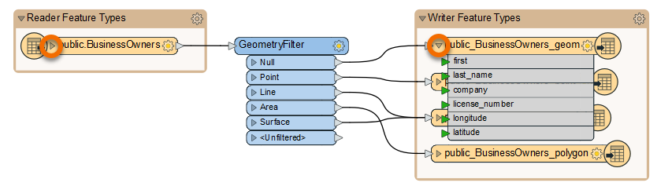
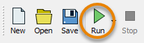

Learning Objectives
After completing this lesson, you’ll be able to:
- Identify when to use Generate Workspace versus starting with a blank workspace.
- Connect to a database.
- Quickly create a workflow using Generate Workspace.
Resources
Video
Jumpstart Your Data Integration Workflows

Jennifer is a GIS Specialist working for a local government. She needs to read in a table of business license data from a PostGIS database and write it to an Esri geodatabase, a widely-used spatial database. The PostGIS database is used internally, while the geodatabase is used in public-facing applications. Therefore, she wants to edit the attribute names and filter out some features with revoked business licenses in the final geodatabase in order to have appropriate data for displaying to the public.
Before she conducts those steps, however, she needs to get started with a basic conversion workspace. She could add her readers and writers manually on a blank canvas, or she could use the Generate Workspace dialog to set up her workspace faster.
Jennifer knows that the Generate Workspace dialog will let her quickly create a workspace. She just has to supply the reader and writer format and dataset locations, and FME does the rest. It will automatically do its best to duplicate the reader schema (formal definition of a dataset’s structure) on the writer, handling differences in data types or restrictions on geometry types or attribute name lengths.
To generate a workspace, Jennifer starts FME Workbench (2022.0 or later) and clicks Generate in the Start tab.

Connect to a Database
With the Generate Workspace dialog open, Jennifer fills out the Reader section first to define her source data. She chooses PostGIS by typing in the Format field and then selecting “PostGIS” from the drop-down options.

Next, she needs to connect to the database. She can do that with a database connection.

From here, she fills in her database connection details.

She clicks Test and then Save. FME tests the connection and confirms that it is working.
Because Jennifer doesn’t want to read the entire database, she clicks the Parameters button, which will allow her to choose the table she wants to read.

In the PostGIS Parameters dialog, she clicks the ellipsis [...] button next to the Tables parameter. She clicks the > arrow next to public to expand the list of tables and then picks the BusinessOwners table from the list. This step ensures only the BusinessOwners table will be read.

Once the BusinessOwners table is selected, she saves her changes by clicking OK.
Generate a Workspace
Jennifer needs these business tables in an Esri geodatabase so she can use them in ArcGIS. To create a new Esri geodatabase for this data, she fills out the Writer section of the Generate Workspace dialog. She selects the Format “Esri Geodatabase (File Geodb Open API)” and enters the file path “C:\FMEData\Output\Training\BusinessOwners.gdb” for Dataset. BusinessOwners.gdb will be created in the Training folder once this workspace is run.

Before clicking OK, there is one extra step. Jennifer needs to review the parameters of the readers and writers she’s using to ensure that her data is being transformed properly. Jennifer knows that while authoring her workspace, she might want to run this workspace more than once for testing purposes. And if she does that without handling the parameters correctly, especially the database operations, she could end up appending the same data to the original output from the first run of the translation. To avoid this mistake, she opens the Parameters and enables Overwrite Existing Database.

This step ensures that if the workspace runs more than once the entire geodatabase is rewritten.
She saves her changes by clicking OK, and FME Workbench generates the workspace.

Understanding a Generated Workspace
Jennifer notices that FME has automatically added a transformer called the GeometryFilter to the canvas. The GeometryFilter is one of the hundreds of transformers available in FME that allow users to modify their data without having to code. FME automatically added a GeometryFilter to filter incoming PostGIS features by geometry type, writing points, lines, polygons, and collections to corresponding writer feature types. This transformer is needed because a geodatabase feature class can only have one type of geometry, and this limitation is inherent to the data format structure.
Jennifer sees that Generate Workspace has created four feature types (feature classes in the geodatabase), one for each kind of geometry supported by the geodatabase format.

By clicking the triangle on the left of her reader and one writer feature type, Jennifer can see that FME duplicates the reader schema (e.g., attribute names) as best it can on the writer, taking into account format issues like different data types and restrictions on attribute names. These automated steps are one reason she used Generate Workspace.

After she quickly examines the attribute names, she clicks the triangles again to hide them. She’ll examine the schema in more detail later.
Run the Workspace
Jennifer clicks Run to run her workspace and convert her data.

After the workspace has run, the Translation Log reports that the “Translation was Successful”. Jennifer selects one of the writer feature types and clicks Open Containing Folder to confirm the geodatabase has been created.

Jennifer is off to a good start. She has created a new geodatabase from her PostGIS dataset with the business owner data loaded into it. Next, she has to edit the schema.
Exercise
After following along with Jennifer’s steps, find the size of your BusinessOwners.gdb output to answer the quiz question below. You can check the size on Windows by right-clicking the folder in the File Explorer, clicking Properties, and checking the General tab and the number under Size. On Mac, click the folder in Finder to select it, then use File > Get Info and check the Size.